调度用户发起紧急半双工单呼，在呼叫的终端上会产生声光告警，并自动进入半双工（无需再按任意键）通话状态。
在本节，我们主要介绍以下两种紧急半双工单呼的发起/接听方式：
1）在系统操作菜单栏中单击［调度功能/呼叫面板］，弹出“呼叫面板”对话框。
2）单击“呼叫业务”模块中的“紧急呼叫”，弹出“紧急呼叫”对话框。输入终端标识，系统自动获取用户对应的姓名、所属单位以及编号。
3）选择“呼叫方式”为“对讲模式”，如图1.1所示。
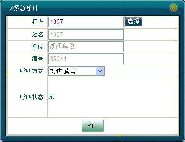
图1.1 选择对讲模式
4）单击＜PTT＞按钮，此时新增＜挂断＞按钮，如图1.2所示。
图1.2 对方在振铃中
5）用户通过按下PTT键授权讲话，如图1.3所示，松开PTT键则释放发射权。
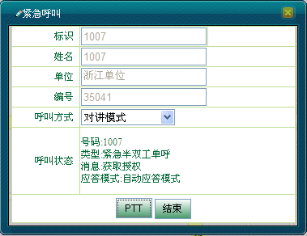
图1.3 用户获取授权
6）当无线用户释放授权时，调度员可按住＜PTT＞获取授权，发送语音信息，释放＜PTT＞则释放授权，如图1.4所示。
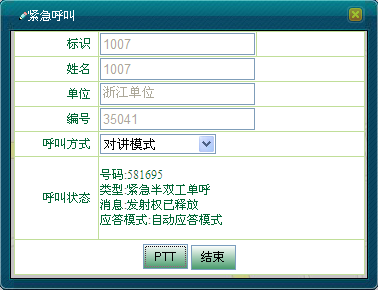
图1.4 调度台释放授权
7）在通话过程中，都会收到一系列的呼叫消息。当通话结束后，调度员可单击＜结束＞结束通话，如图1.5所示。
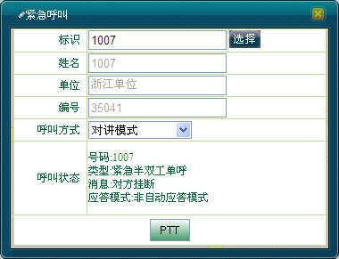
图1.5 结束半双工紧急单呼
 说明：
说明：
若调度员对未注册的用户发起紧急半双工单呼，则会收到“对方挂断”的呼叫消息。
1）若调度台接收到用户“1007（1007）”发起的半双工紧急呼叫请求，此时用户的右上角会有紧急呼叫图标显示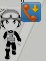，，“紧急呼叫”对话框显示如图1.6所示。
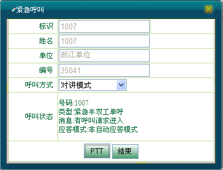
图1.6 呼叫请求进入
2）调度台按住＜PTT＞即可获取授权进行通话，如图1.7所示。释放＜PTT＞则释放发射权。
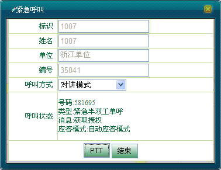
图1.7 调度台获取授权
3）当调度台释放发射权时，无线用户可按住PTT键发射语音信息，释放PTT键释放者授权，如图1.8所示。
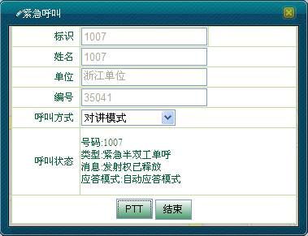
图1.8 用户释放授权
4）通话结束时，调度台可单击＜结束＞结束紧急半双工单呼。
1）若调度台接收到用户“1008（1008）”发起的紧急半双工呼叫请求，此时，呼叫上行面板中的“单呼”面板显示如图2.1所示。
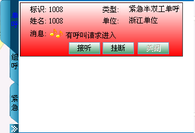
图2.1 有呼叫请求进入
2）按住＜PTT＞键即可获取授权，如图2.2所示。松开＜PTT＞键释放授权。单击＜挂断＞则拒绝接听。
图2.2 调度台获取授权
3）无线用户在调度台释放权限后，可以按住PTT键发送语音，松开PTT键则释放授权。
4）调度员按下＜挂断＞按钮或者用户挂断即可结束本次通话，如图2.3所示。
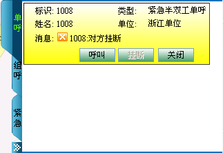
图2.3 结束紧急半双工单呼
1）选中呼叫上行面板中的紧急半双工单呼面板，单击＜呼叫＞按钮发起呼叫，此时＜呼叫＞按钮变为＜PTT＞，＜关闭＞按钮变灰，如图2.4所示。
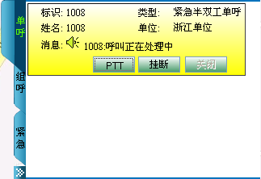
图2.4 发起紧急半双工单呼
2）用户按住PTT键接听，呼叫建立，并有优先语音发射权，如图2.5所示。当用户释放PTT键时，显示“1008:发射权已释放”。
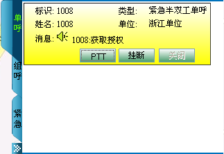
图2.5 用户获取授权
3）调度台按下＜PTT＞按钮获取授权，松开＜PTT＞则释放授权。
4）调度员按下＜挂断＞按钮或者用户挂断即可结束本次通话，此时＜呼叫＞、＜关闭＞两个按钮可用，＜挂断＞按钮变灰。
说明：
在呼叫上行面板中，调度员只能对已有紧急半双工单呼上行记录的终端发起紧急半双工单呼。
| 返回顶端 |
Copyright © 2012 Eastcom, Inc. All rights reserved. |
||